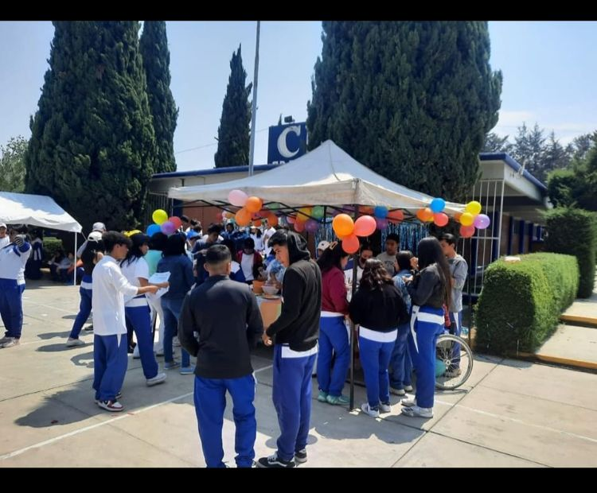

|
Tratamos de tener una presentacion buena,
para tener un buen resultado |
La presentacion fue en la explanada de la escuela. Compartimos la receta,
y una muestra del platillo. |
|
|  |
De igual manera, los demas grupos presentaron un platillo,
el cual podiamos ir a degustar. |
Se creo un video en el cual agregamos las imagenes
antes vistas. |
|